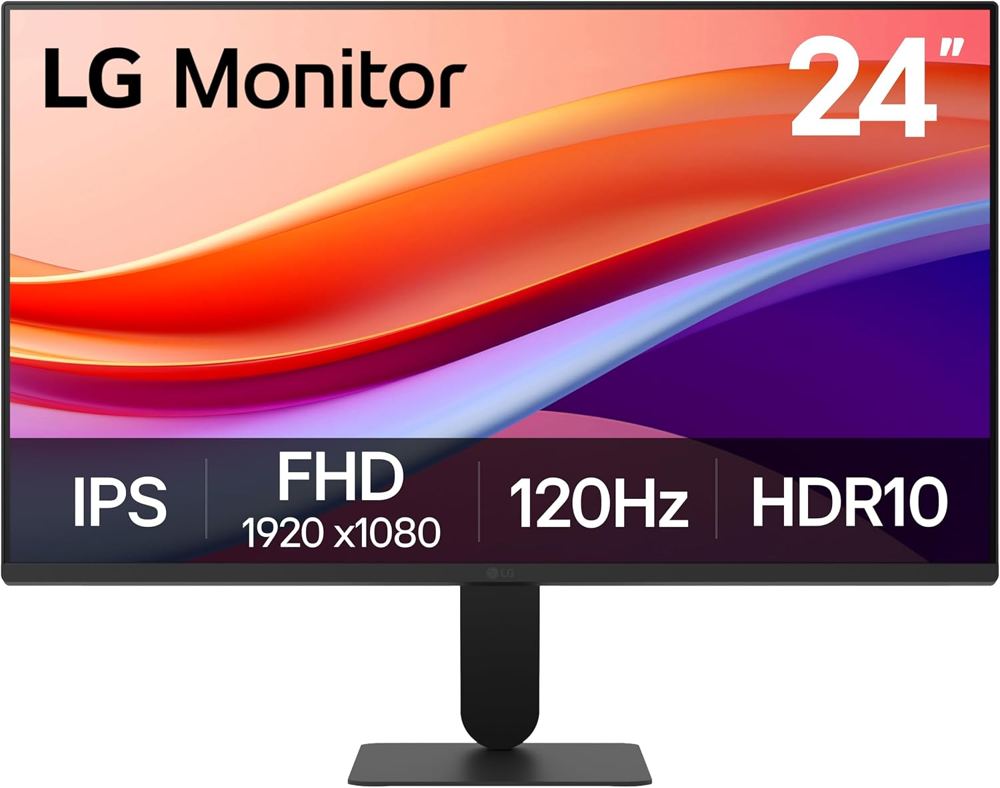

Vivid Color with Full HD Resolution - The LG 24" IPS monitor with Full HD (1920 x 1080) resolution delivers sharp, vibrant visuals from virtually any angle. Whether you're tackling tasks, browsing the web, or managing your inbox, this monitor helps you stay clear, focused, and productive.
Pengajuan peminjaman berhasil disubmit.